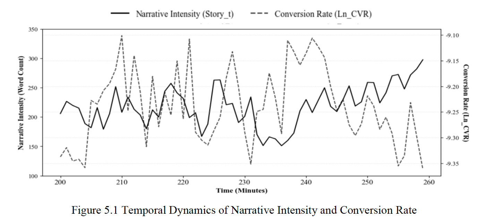
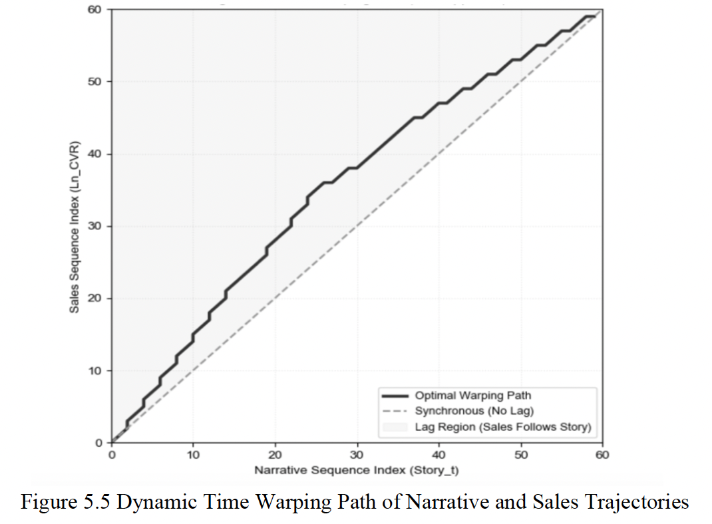

Research
Master's Thesis
Management Science & EngineeringMy research investigates behavioral dynamics and information systems in digital retail environments. I combine natural language processing and time-series econometrics to examine how linguistic strategies and platform interfaces shape consumer decisions over time.
From Narrative to Conversion: The Dynamic Impact of Streamer Storytelling on Livestream Sales Performance (An Empirical Study of Taobao Women's Apparel)
This empirical study examines how host storytelling influences purchasing behavior in livestream commerce. Using 5,000 minute-level observations from Taobao Live, I quantified narrative intensity across scenario building, sensory description, and problem-solution structures. The econometric models reveal that storytelling does not trigger immediate impulse buying. Instead, it absorbs cognitive bandwidth, stabilizes chat room sentiment volatility, and drives concentrated conversion bursts several minutes later.
I was the lead researcher responsible for the theoretical framework, minute-level transcript coding, econometric modeling, and data analysis.

